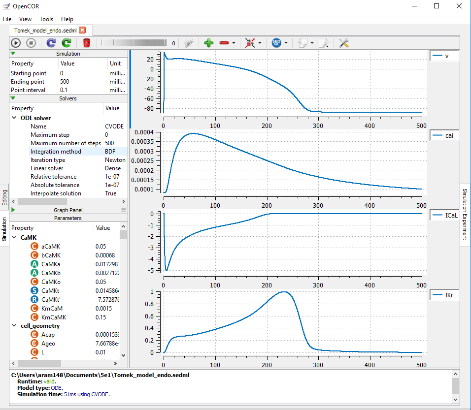

This is the endocardial variant of the Tomek, Jakub, et al. "Development, calibration, and validation of a novel human ventricular myocyte model in health, disease, and drug block." Elife 8 (2019). DOI: 10.7554/eLife.48890, please click the launch in OpenCOR link in the right-hand side menu to reproduce the results associated with Fig 2A, 2B, 2F and Appendix 1 Fig 7 of this model.
|  |
| Results produced by the endocardial SED-ML model with OpenCOR. |